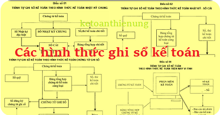

Theo Thông tư 200 có 5 hình thức ghi sổ kế toán, theo Thông tư 133 có 4 hình thức ghi sổ kế toán, Kế toán Diệu Tâm xin tổng hợp các hình thức ghi sổ kế toán mới nhất để các bạn cùng tham khảo:
- DN bạn đang sử dụng chế độ kế toán theo Thông tư 133 hay Thông tư 200 thì lựa chọn cho phù hợp nhé:
I. Các hình thức ghi sổ kế toán theo Thông tư 133:
- Hình thức kế toán Nhật ký chung;
- Hình thức kế toán Nhật ký - Sổ Cái;
- Hình thức kế toán Chứng từ ghi sổ;
- Hình thức kế toán trên máy vi tính.
- Trong mỗi hình thức sổ kế toán có những quy định cụ thể về số lượng, kết cấu, mẫu sổ, trình tự, phương pháp ghi chép và mối quan hệ giữa các sổ kế toán.
(Theo khoản 1 Phụ lục 4 Thông tư 133)
II. Các hình thức ghi sổ kế toán theo Thông tư 200:
- Hình thức kế toán Nhật ký chung;
- Hình thức kế toán Nhật ký - Sổ Cái;
- Hình thức kế toán Chứng từ ghi sổ;
- Hình thức kế toán Nhật ký- Chứng từ;
- Hình thức kế toán trên máy vi tính.
(Theo điều 122 Thông tư 200)
III. Quy định về sổ kế toán:
Sổ kế toán gồm sổ kế toán tổng hợp và sổ kế toán chi tiết. Sổ kế toán tổng hợp, gồm: Sổ Nhật ký, Sổ Cái. Sổ kế toán chi tiết, gồm: Sổ, thẻ kế toán chi tiết.
a) Sổ kế toán tổng hợp
- Sổ Nhật ký dùng để ghi chép các nghiệp vụ kinh tế, tài chính phát sinh trong từng kỳ kế toán và trong một niên độ kế toán theo trình tự thời gian và quan hệ đối ứng các tài khoản của các nghiệp vụ đó. Số liệu kế toán trên sổ Nhật ký phản ánh tổng số phát sinh bên Nợ và bên Có của tất cả các tài khoản kế toán sử dụng ở doanh nghiệp. Sổ Nhật ký phải phản ánh đầy đủ các nội dung sau:
+ Ngày, tháng ghi sổ;
+ Số hiệu và ngày, tháng của chứng từ kế toán dùng làm căn cứ ghi sổ;
+ Tóm tắt nội dung của nghiệp vụ kinh tế, tài chính phát sinh;
+ Số tiền của nghiệp vụ kinh tế, tài chính phát sinh.
- Sổ Cái dùng để ghi chép các nghiệp vụ kinh tế, tài chính phát sinh trong từng kỳ và trong một niên độ kế toán theo các tài khoản kế toán được quy định trong chế độ tài khoản kế toán áp dụng cho doanh nghiệp. Số liệu kế toán trên Sổ Cái phản ánh tổng hợp tình hình tài sản, nguồn vốn, tình hình và kết quả hoạt động sản xuất, kinh doanh của doanh nghiệp. Sổ Cái phải phản ánh đầy đủ các nội dung sau:
+ Ngày, tháng ghi sổ;
+ Số hiệu và ngày, tháng của chứng từ kế toán dùng làm căn cứ ghi sổ;
+ Tóm tắt nội dung của nghiệp vụ kinh tế, tài chính phát sinh;
+ Số tiền của nghiệp vụ kinh tế, tài chính phát sinh ghi vào bên Nợ hoặc bên Có của từng tài khoản.
b) Sổ, thẻ kế toán chi tiết
Sổ, thẻ kế toán chi tiết dùng để ghi chép các nghiệp vụ kinh tế, tài chính phát sinh liên quan đến các đối tượng kế toán cần thiết phải theo dõi chi tiết theo yêu cầu quản lý. Số liệu trên sổ, thẻ kế toán chi tiết cung cấp các thông tin phục vụ cho việc quản lý từng loại tài sản, nguồn vốn, doanh thu, chi phí chưa được chi tiết trên sổ Nhật ký và Sổ Cái. Số lượng, kết cấu các sổ, thẻ kế toán chi tiết không quy định bắt buộc. Các doanh nghiệp căn cứ vào quy định mang tính hướng dẫn tại Chế độ kế toán về sổ, thẻ kế toán chi tiết và yêu cầu quản lý của doanh nghiệp để mở các sổ, thẻ kế toán chi tiết cần thiết, phù hợp.
Xem thêm: Quy định về sổ sách kế toán
- DN được tự xây dựng mẫu sổ kế toán và hình thức ghi sổ kế toán nhưng phải đảm bảo cung cấp thông tin về giao dịch kinh tế một cách minh bạch, phản ánh đầy đủ, kịp thời, dễ kiểm tra, dễ kiểm soát và dễ đối chiếu.
- Nếu không tự xây dựng được thì có thể áp dụng các hình thức sổ kế toán được hướng dẫn trong phụ lục số 4 Thông tư 200 và 133 để lập Báo cáo tài chính nếu phù hợp với đặc điểm quản lý và hoạt động kinh doanh của mình, cụ thể như sau:
IV: Các hình thức ghi sổ kế toán:
1. Hình thức kế toán Nhật ký chung:
- Nguyên tắc, đặc trưng cơ bản của hình thức kế toán Nhật ký chung: Tất cả các nghiệp vụ kinh tế, tài chính phát sinh đều phải được ghi vào sổ Nhật ký, mà trọng tâm là sổ Nhật ký chung, theo trình tự thời gian phát sinh và theo nội dung kinh tế (định khoản kế toán) của nghiệp vụ đó. Sau đó lấy số liệu trên các sổ Nhật ký để ghi Sổ Cái theo từng nghiệp vụ phát sinh
Chi tiết các bạn xem tại đây:
Cách ghi sổ kế toán theo hình thức Nhật ký chung
Cách ghi sổ kế toán theo hình thức Nhật ký chung
2. Hình thức kế toán Nhật ký – Sổ cái:
- Đặc trưng cơ bản của hình thức kế toán Nhật ký - Sổ Cái: Các nghiệp vụ kinh tế, tài chính phát sinh được kết hợp ghi chép theo trình tự thời gian và theo nội dung kinh tế (theo tài khoản kế toán) trên cùng một quyển sổ kế toán tổng hợp duy nhất là sổ Nhật ký - Sổ Cái. Căn cứ để ghi vào sổ Nhật ký - Sổ Cái là các chứng từ kế toán hoặc Bảng tổng hợp chứng từ kế toán cùng loại.
Chi tiết các bạn xem tại đây:
Cách ghi sổ kế toán theo hình thức Nhật ký sổ cái
Cách ghi sổ kế toán theo hình thức Nhật ký sổ cái
3. Hình thức kế toán Chứng từ - ghi sổ
- Đặc trưng cơ bản của hình thức kế toán Chứng từ ghi sổ: Căn cứ trực tiếp để ghi sổ kế toán tổng hợp là “Chứng từ ghi sổ”. Việc ghi sổ kế toán tổng hợp bao gồm:
- Ghi theo trình tự thời gian trên Sổ Đăng ký Chứng từ ghi sổ.
- Ghi theo nội dung kinh tế trên Sổ Cái.
Chứng từ ghi sổ do kế toán lập trên cơ sở từng chứng từ kế toán hoặc Bảng Tổng hợp chứng từ kế toán cùng loại, có cùng nội dung kinh tế. Chứng từ ghi sổ được đánh số hiệu liên tục trong từng tháng hoặc cả năm (theo số thứ tự trong Sổ Đăng ký Chứng từ ghi sổ) và có chứng từ kế toán đính kèm, phải được kế toán trưởng duyệt trước khi ghi sổ kế toán
Chi tiết các bạn xem tại đây:
Cách ghi sổ kế toán theo hình thức Chứng từ ghi sổ
4. Hình thức kế toán Nhật ký – Chứng từ (133 không có hình thức này)
- Đặc trưng cơ bản của hình thức kế toán Nhật ký - Chứng từ (NKCT)
- Tập hợp và hệ thống hoá các nghiệp vụ kinh tế phát sinh theo bên Có của các tài khoản kết hợp với việc phân tích các nghiệp vụ kinh tế đó theo các tài khoản đối ứng Nợ.
- Kết hợp chặt chẽ việc ghi chép các nghiệp vụ kinh tế phát sinh theo trình tự thời gian với việc hệ thống hoá các nghiệp vụ theo nội dung kinh tế (theo tài khoản).
- Kết hợp rộng rãi việc hạch toán tổng hợp với hạch toán chi tiết trên cùng một sổ kế toán và trong cùng một quá trình ghi chép.
- Sử dụng các mẫu sổ in sẵn các quan hệ đối ứng tài khoản, chỉ tiêu quản lý kinh tế, tài chính và lập báo cáo tài chính.
Chi tiết các bạn xem tại đây:
Cách ghi sổ kế toán theo hình thức Nhật ký chứng từ
Cách ghi sổ kế toán theo hình thức Nhật ký chứng từ
5. Hình thức kế toán trên máy vi tính
- Đặc trưng cơ bản của Hình thức kế toán trên máy vi tính: Công việc kế toán được thực hiện theo một chương trình phần mềm kế toán trên máy vi tính. Phần mềm kế toán được thiết kế theo nguyên tắc của một trong bốn hình thức kế toán hoặc kết hợp các hình thức kế toán quy định trên đây. Phần mềm kế toán không hiển thị đầy đủ quy trình ghi sổ kế toán, nhưng phải in được đầy đủ sổ kế toán và báo cáo tài chính theo quy định. Phần mềm kế toán được thiết kế theo Hình thức kế toán nào sẽ có các loại sổ của hình thức kế toán đó nhưng không hoàn toàn giống mẫu sổ kế toán ghi bằng tay.
Chi tiết bạn có thể xem tại đây:
Cách ghi sổ kế toán theo hình thức trên máy vi tính
Cách ghi sổ kế toán theo hình thức trên máy vi tính
Chúc các bạn thành công.
__________________________________________________
